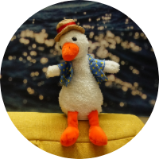

跳转至

link与门
G♭7♯9♭13
正在初始化搜索引擎
欢迎
jazz licks
和弦琶音
和弦快速匹配
和弦音阶
钢琴和弦
钢琴和弦按法
简谱
link与门
欢迎
欢迎
欢迎来到link与门
jazz licks
jazz licks
licks_001
licks_002
licks_003
licks_004
licks_005
licks_006
licks_007
licks_008
licks_009
licks_010
licks_011
licks_012
licks_013
licks_014
licks_015
licks_016
licks_017
licks_018
licks_019
licks_020
licks_021
licks_022
licks_023
licks_024
licks_025
licks_026
licks_027
licks_028
licks_029
licks_030
licks_031
licks_032
licks_033
licks_034
licks_035
licks_036
licks_037
licks_038
licks_039
licks_040
licks_041
licks_042
licks_043
licks_044
licks_045
licks_046
licks_047
licks_048
licks_049
licks_050
licks_051
licks_052
licks_053
licks_054
licks_055
licks_056
licks_057
licks_058
licks_059
licks_060
licks_061
licks_062
licks_063
licks_064
licks_065
licks_066
licks_067
licks_068
licks_069
licks_070
licks_071
licks_072
licks_073
licks_074
licks_075
licks_076
licks_077
licks_078
licks_079
licks_080
licks_081
licks_082
licks_083
licks_084
licks_085
licks_086
licks_087
licks_088
licks_089
licks_090
licks_091
licks_092
licks_093
licks_094
licks_095
licks_096
licks_097
licks_098
licks_099
licks_100
和弦琶音
和弦琶音
C
C♯
D
E♭
E
F
F♯
G
A♭
A
B♭
B
和弦快速匹配
和弦快速匹配
属
♯5sus4
sus4
aug
major
属7
九
属7♭9
大六
M♭5
7no5
m♯5
minor
m7
dim
sus2
和弦音阶
和弦音阶
C
C♯
D♭
D
D♯
E♭
E
F
F♯
G♭
G
G♯
A♭
A
A♯
B♭
B
钢琴和弦
钢琴和弦
C
C♯
D♭
D
D♯
E♭
E
F
F♯
G♭
G
G♯
A♭
A
A♯
B♭
B
钢琴和弦按法
钢琴和弦按法
C
C♯
D♭
D
D♯
E♭
E
F
F♯
G♭
G♭
G♭major
G♭minor
G♭dim
G♭dim7
G♭sus2
G♭sus4
G♭7sus4
G♭aug
G♭6
G♭69
G♭7
G♭7♭5
G♭7♯5
G♭9
G♭9♭5
G♭9♯5
G♭7♭9
G♭7♯9
G♭11
G♭9♯11
G♭13
G♭M7
G♭M7♭5
G♭M7♯5
G♭M9
G♭M11
G♭M13
G♭minor6
G♭minor7
G♭minor7♭5
G♭minor9
G♭minor69
G♭minor11
G♭minorM7
G♭minorM7♭5
G♭minorM9
G♭minorM11
G♭Madd9
G♭minoradd9
G♭minorM7♯5
G♭7sus2
G♭M♯4
G♭minor13
G♭7♯11
G♭alt7
G♭7♭9sus4
G♭5
G♭M9♯11
G♭sus24
G♭M9♯5
G♭7♯5♯9
G♭9♯5♯11
G♭7♯5♭9
G♭7♯5♭9♯11
G♭+add♯9
G♭M♯5add9
G♭M6♯11
G♭M7add13
G♭69♯11
G♭7♭6
G♭M7♯9♯11
G♭M13♯11
G♭M7♭9
G♭7♯11♭13
G♭7♯9♯11
G♭13♯9♯11
G♭7♯9♯11♭13
G♭13♯9
G♭7♯9♭13
G♭13♯11
G♭9♯11♭13
G♭7♭9♯11
G♭13♭9♯11
G♭7♭9♭13♯11
G♭13♭9
G♭7♭9♭13
G♭7♭9♯9
G♭Madd♭9
G♭M♭5
G♭13♭5
G♭M9♭5
G♭7no5
G♭7♭13
G♭9no5
G♭13no5
G♭9♭13
G♭minoradd4
G♭minor♯5
G♭minorM7♭6
G♭minorM9♭6
G♭m7add11
G♭dim7M7
G♭minor7♯5
G♭minor9♯5
G♭minor11♯5
G♭minor9♭5
G♭minor11♭5
G♭minor♭6♭9
G♭M7♯5sus4
G♭M9♯5sus4
G♭7♯5sus4
G♭M7sus4
G♭M9sus4
G♭9sus4
G♭13sus4
G♭7sus4♭9♭13
G♭4
G♭11♭9
G
G♯
A♭
A
A♯
B♭
B
简谱
简谱
李荣浩-恋人
徐佳莹-行走的鱼
G♭
本文总阅读量
次
回到页面顶部